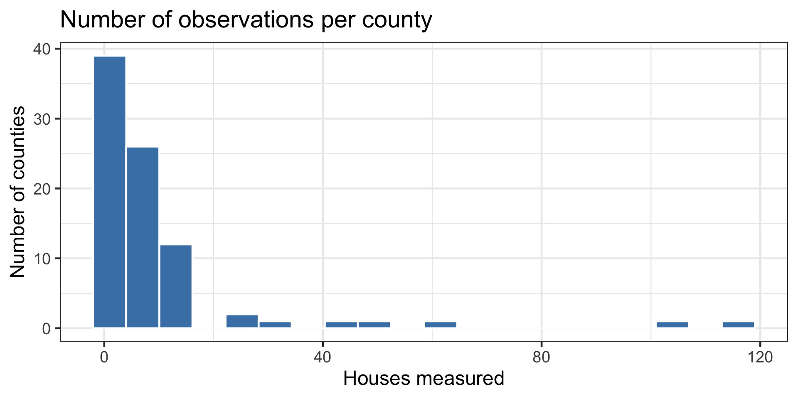
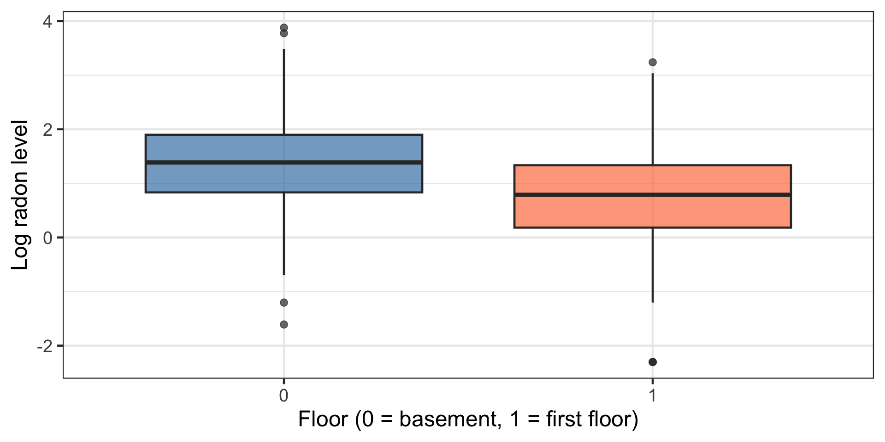
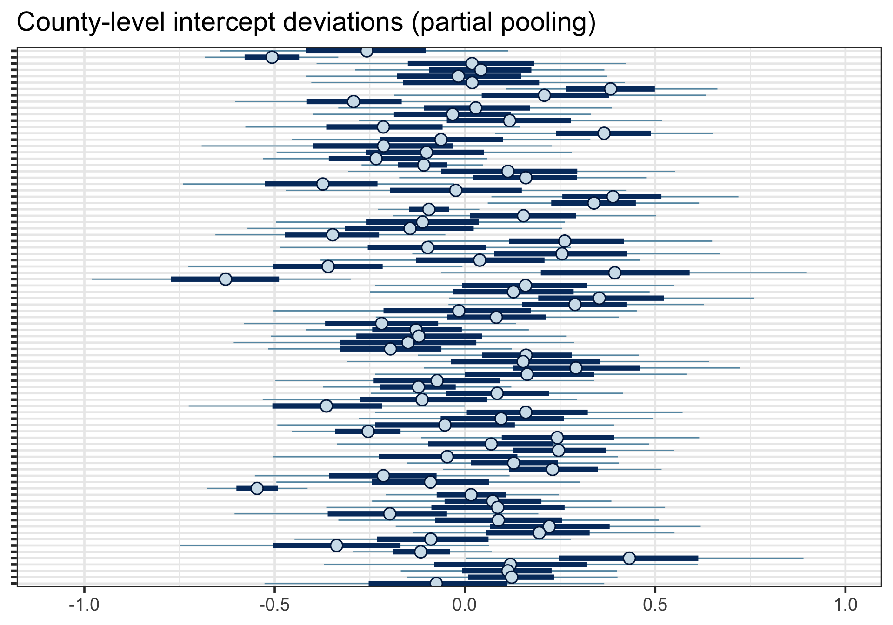
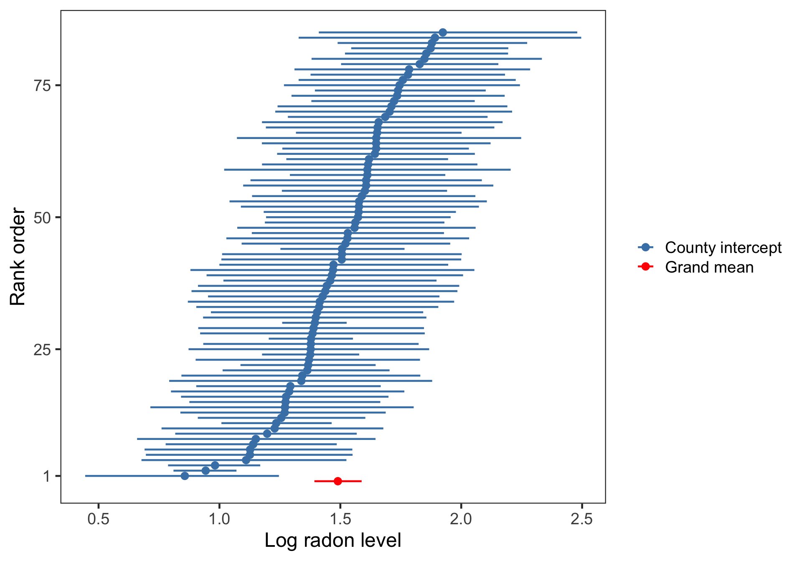
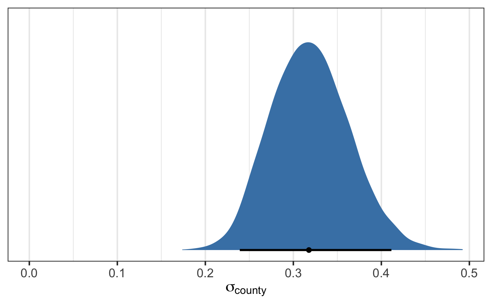
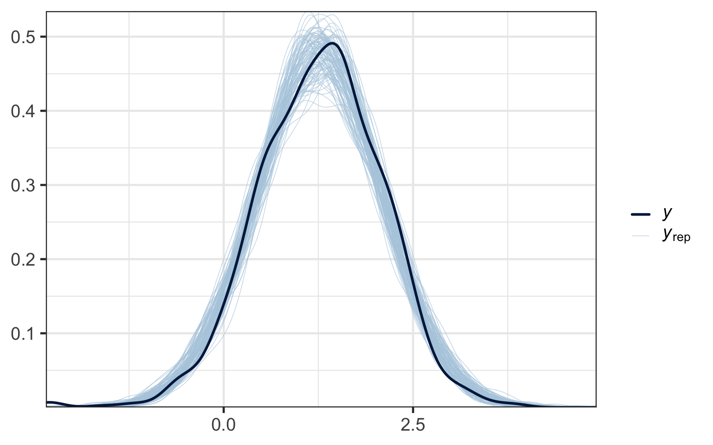

Partial Pooling, Shrinkage, and Group-Level Inference
PSY504, Advanced Statistics in Psychology
Princeton University
2026-04-13
You already know two things:
How to fit mixed models with lmer(): random intercepts, random slopes, crossed effects, ICC, model comparison
How to fit Bayesian regression with brm(): priors, posteriors, credible intervals, posterior predictive checks, LOO-CV
Today: what happens when we combine them
lme4 actually do?lme4 uses a procedure equivalent to empirical Bayes:
lmer default)The uncertainty in the variance components is not propagated to the group-level estimates.
In 1956, Charles Stein proved something that surprised the statistics world:
lmer() already produces these pulled estimates (shrinkage). The Bayesian model does the same pulling, with full uncertainty about how much to pull.
Simple balanced experiment
Using Bayes to analyze a clean 2x2 ANOVA is like cutting a birthday cake with a chainsaw.
It works, but the extra machinery does nothing.
Multilevel models
Fitting hierarchical models without Bayes is like cutting down a tree with a pocketknife.
It works, but you end up making compromises you don’t have to make.
Bayes vs. freq differences are more striking with MLMs.
| Aspect | Frequentist | Bayesian |
|---|---|---|
| Probability philosophy | Long-run frequency | Degree of belief |
| Parameters | Fixed unknowns | Random variables |
| Estimation | Point estimates (MLE) | Full posteriors |
| Uncertainty | Confidence intervals | Credible intervals |
| Interpretation | “95% of samples contain true value” | “95% probability parameter in range” |
| Prior Info | Not formally used | Explicit priors |
| Prediction | Points with errors | Full distributions |
| Testing | p-values | Posterior probabilities |
| Comparison | AIC, BIC | WAIC, LOO-CV, Bayes Factor |
| Computation | Often analytical | MCMC sampling |
| Workflow | Residuals, QQ plots | Posterior checks, Rhat |
| Small Samples | Often poor | Can be robust |
| R Implementation | lm(), glmer() | brms::brm(), rstan() |
| Speed | Faster | More intensive |
| Regularization | Penalties (LASSO) | Natural via priors |
The hyperparameter \(\sigma\) (group-level SD) determines the amount of pooling:
You do not hand-pick the amount of pooling. The model estimates it from the data, guided by your prior on \(\sigma\).
(a) A description of population structure
Groups come from a population. The model describes that population’s distribution.
(b) A regularization machine
Extreme estimates from small groups get pulled toward the population average.
If you model the population, regularization happens.
If you want regularization, model the population.
Partial pooling produces shrinkage: estimates pulled toward a common value.
Adaptive, automatic, and not a tuning choice.
brmsEPA measurements of radon gas levels in 919 Minnesota homes across 85 counties.

log_radon (log of radon gas level)floor (0 = basement, 1 = first floor)county (85 Minnesota counties)log_uranium (soil uranium content)
Ignore counties entirely. One regression for all 919 homes.
Each county gets its own intercept, estimated from its own data. (The floor slope and residual variance are still shared.)
Counties share a common distribution. Each county’s estimate borrows strength from the others.
The formula is the same as lmer(): (1 | county_id)
The one addition: prior(exponential(1), class = sd)

Family: gaussian
Links: mu = identity
Formula: log_radon ~ floor + (1 | county_id)
Data: mn_radon (Number of observations: 919)
Draws: 4 chains, each with iter = 2000; warmup = 1000; thin = 1;
total post-warmup draws = 4000
Multilevel Hyperparameters:
~county_id (Number of levels: 85)
Estimate Est.Error l-95% CI u-95% CI Rhat Bulk_ESS Tail_ESS
sd(Intercept) 0.32 0.04 0.24 0.41 1.00 1518 2312
Regression Coefficients:
Estimate Est.Error l-95% CI u-95% CI Rhat Bulk_ESS Tail_ESS
Intercept 1.49 0.05 1.39 1.59 1.00 2617 2867
floor -0.66 0.07 -0.80 -0.53 1.00 8123 3054
Further Distributional Parameters:
Estimate Est.Error l-95% CI u-95% CI Rhat Bulk_ESS Tail_ESS
sigma 0.73 0.02 0.69 0.76 1.00 6334 3144
Draws were sampled using sampling(NUTS). For each parameter, Bulk_ESS
and Tail_ESS are effective sample size measures, and Rhat is the potential
scale reduction factor on split chains (at convergence, Rhat = 1).lmer() and brm(): same formula| Formula | |
|---|---|
lmer() |
mean_pupil ~ vocoded + (1 + vocoded \| subject) |
brm() |
mean_pupil ~ vocoded + (1 + vocoded \| subject) |
| What changes | Add prior(exponential(1), class = sd) |
The formula syntax is identical. The difference is that brms puts an explicit prior on \(\sigma\) (the group-level SD), while lme4 fixes it at a plug-in estimate.
ranef() vs. coef() in brmsTwo ways to summarize group-level parameters:
ranef() (random effects, or “group-level effects” in brms) returns deviations around the grand mean (\(u_{0i}\))coef() (coefficients, or “population-level + group-level” in brms) returns the actual group intercepts (\(\beta_0 + u_{0i}\))coef(fit_partial)$county_id[, , "Intercept"] %>%
data.frame() %>%
arrange(Estimate) %>%
mutate(rank = 1:n()) %>%
bind_rows(
fixef(fit_partial) %>%
data.frame() %>%
filter(row.names(.) == "Intercept") %>%
mutate(rank = 0)
) %>%
mutate(type = ifelse(rank == 0, "Grand mean", "County intercept")) %>%
ggplot(aes(x = Estimate, xmin = Q2.5, xmax = Q97.5,
y = rank, color = type)) +
geom_pointrange(size = 1/3) +
scale_color_manual(NULL, values = c("Grand mean" = "red", "County intercept" = "steelblue")) +
scale_y_continuous("Rank order", breaks = c(1, 25, 50, 75)) +
xlab("Log radon level") +
theme(panel.grid = element_blank())

\(\sigma_{county} \approx 0.3\) — the population SD of county-level radon intercepts.
Does the 95% credible interval for a fixed effect exclude zero?
If the HDI excludes zero, the effect is credibly different from zero at 95%.

McElreath’s practical workflow:
y ~ 1 + (1 | group)adapt_delta (e.g., control = list(adapt_delta = 0.95))| Diagnostic | What it tells you | Worry threshold |
|---|---|---|
| Rhat | Chain convergence | Above 1.01 |
| Bulk ESS | Posterior body sampling | Below 400 |
| Tail ESS | Posterior tail sampling | Below 400 |
| Divergences | Funnel geometry problems | Any above 0 |
Divergences in hierarchical models often mean the sampler is struggling with the “funnel” shape of the posterior where \(\sigma\) is small.
loo_compare())Can we test whether a specific effect is zero?
bayesfactor_parameters() from bayestestRsample_prior = "yes" and an explicit prior# Fit with prior sampling enabled
fit_bf <- brm(
log_radon ~ floor + (1 | county_id),
prior = prior(normal(0, 1), class = Intercept) +
prior(normal(0, 1), class = b) +
prior(exponential(1), class = sd) +
prior(exponential(1), class = sigma),
data = mn_radon,
sample_prior = "yes",
file = "fits/fit_bf"
)
# Test floor effect against zero
bayesfactor_parameters(fit_bf, null = 0)# Compare models with different fixed effects
fit_bf1 <- brm(
log_radon ~ floor + (1 | county_id),
prior = prior(normal(0, 1), class = b) +
prior(exponential(1), class = sd),
data = mn_radon,
sample_prior = "yes",
save_pars = save_pars(all = TRUE),
file = "fits/fit_bf1"
)
fit_bf2 <- brm(
log_radon ~ 1 + (1 | county_id),
prior = prior(exponential(1), class = sd),
data = mn_radon,
sample_prior = "yes",
save_pars = save_pars(all = TRUE),
file = "fits/fit_bf2"
)
bayesfactor_models(fit_bf1, fit_bf2)Tracy Sweet – Associate Professor, University of Maryland
QMMS Psychometric Computation and Simulation (PCS) Lab
Network Science in Psychology
PSY 504: Advanced Statistics